JS13kGames 2021: LOSSST - A Snake in Space
August-September 2021
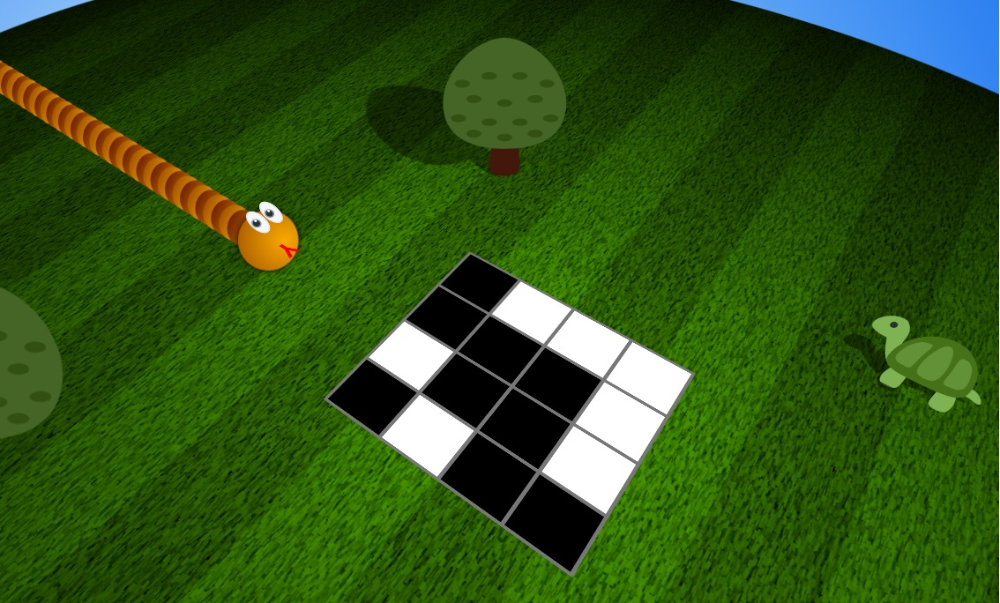
A special year
Welcome!
2021 is a special year: it's the 10th edition of JS13kGames , and it will be the 10th game that I'll develop in solo!
This making-of will cover the completion of a simple idea I've had in 2017, implemented in many forms,
You can play the game on js13kGames.com
The source code is available on Github
This making-of is the long version of this Twitter thread
Before the jam
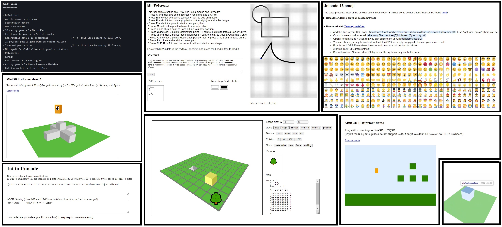
In july, I started preparing this new installment with:
- A list of ideas
successful Twitter thread full of JS13k-specific tips and tools
SVG creation tool
all chars / all shapes / all emoji (and an emoji webfont useable in JS13k entries)
3D map editor in CSS3D
Mini 2D platformer bootstrap
Mini 3D platformer bootstrap
tool to convert a list of numbers into an ASCII or Unicode string
One-div CSS3D cubes (while doing them, I found a super simple way to control the "camera" in CSS3D! )
- Updated my keyboard inputs blog post
All these tools plus all the others I made earlier are available in the JS13k resource page .
But an impressive game-changing tool also appeared this year, developed by Yurume :
RoadRoller , allowing to lose an extra 1-2kb in a fully optimized 13kb zip file! 🤯
Day 1: the theme
So the theme is SPACE !
No code today: day one is dedicated to brainstorming!
I kinda had in mind to do a 3D platformer a la Mario 64, but it wouldn't really fit that theme. So let's find something else!
I scribbled a list of ideas, removed the ones that risked to be over-represented among the other entries, and replayed some of my favourite space-themed mobile games, in particular Escape , Space Frontier and Armory & Machine
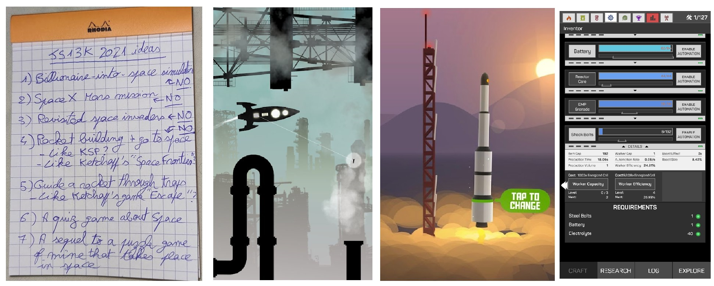
But the last idea I wrote in my notepad was "a sequel to a puzzle game of mine, in space", and that's what I picked:LOSSST , my entry from 2017!
The history of LOSSST
Summer 2017 : I got the "make shapes with a snake" idea, and developed my js13k entry LOSSST .making-of were a huge success, though in retrospect, there are many things I would have done differently: the visuals (rooms are too repetitive, snakes made of cubes look weird, tutorial signposts are not visible enough...), the clumsy CSS3D, the controls (backtracking / moving up and down is difficult), the "exploration / eat apples to grow" thing added a huge unnecessary complexity, and most of all, on a more personal note, I kind of burned out and gained too much weight while developing it, and I regret that.
January 2018 : during JS1K 2018, I developed a 1kb demake of LOSSST with the help of the Codegolf Team, containing 55 levels.HERE .
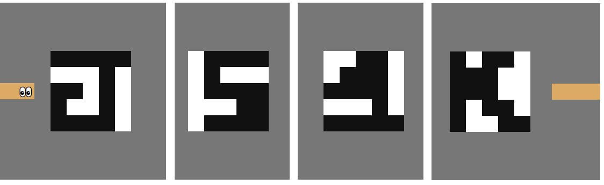
January-June 2018 : I start developing a HD remake of LOSSST with new mechanics, new puzzles, better controls, mp3 musics, photorealistic textures, different environments, better controls, and even a boss fight.puzzle generator to help me find new ideas.
even the 3D ones , were created by hand on a notepad, which was pretty hard).
HERE !
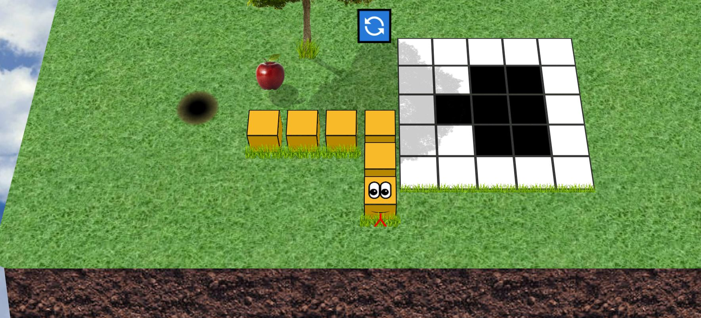
May 2019 : bored with all these cubic snakes, I start to think of a way to represent a volumetric snake out of CSS3D circles and rectangles. You can see a live demo of the result HERE (use mouse to rotate camera vertically).
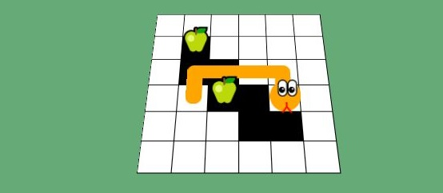
June-august 2020 : ... a CSS3D framework . With it, setting up the camera, a plane, a cube, a sprite (always facing the camera), or moving an object takes a tiny line of code. The framework itself is 1.4kb zipped, and it would literally have saved me dozens of hours (and probably many kbs) while I was developing the first LOSSST game. I used it to make my 2020 entry: Track not found?!
👆 CSS3Dframework's demo: king Bob-omb , made with a plane, 3 rounded divs, 5 emoji and 11 lines of JS
Back to august 13, 2021 : the idea to redevelop LOSSST (and expand it) as a mobile game (with a succession of puzzles of increasing difficulty and extra challenges for each) has grown in my head, and instead of doing it on my free time, let it be my 2021 js13k entry!
How I will proceed
I will make the game I want: a lot of puzzles, with quick transitions, various mechanics, environments and musics, a story, and at the end, puzzles that take place in space (to fit the theme)... and I'll do it with CSS3D (but good CSS3D this time).
No exploration, no apples, no barely-visible tutorial signposts.
Stats: every day, I'll record my screen while I code, and share the number of hours spent, the size of my commented code and my progress on Twitter. I'll check out the zipped size once a week.
Last but not least: leave time for beta-testing, debugging and golfing...
Day 2: what's on the menu?
Brainstorming continues... my idea for now is to build a rocket from different worlds by completing their puzzles.
I scribbled ideas in my notepad and started coding a first draft of my menu...
I drew the rocket pieces in my SVG creator tool, and made a random stars pattern with a tiny SVG snippet inspired by old codegolf projects like miniCliffordAttractor :
<svg fill="#aaa" onload="for(i=500;i--;)innerHTML+=`<text x=${Math.random()*5000} y=${Math.random()*5000}>.</text>`"></svg>To make the page behave well on mobile (and make it installable as an app), I used the following lines at the beginning of my HTML:
<meta name=viewport content="width=device-width,initial-scale=1">
<meta name=apple-mobile-web-app-capable content=yes>
<meta name=mobile-web-app-capable content=yes>NB: I forgot to add ",user-scalable=0 " in the first line. As a result, my game is zoomable with two fingers, but not with a double-tap.
Total : 1h30, 1.2kb. Watch timelapse
Day 3: draw me a snake
I started this day by making a cross-browser scrollbar in CSS, for my menus.
Then, I started working on my snake.
I really wanted to find a way to push CSS3D further, like I did every year since 2017 , so I started placing CSS3D circles in my scene to represent the joints of my snake (still wondering how I'll do the "cylinders" between the joints)...
The snake above takes "only" 44 divs. In my 2017 game LOSSST, a "cubic" snake with the same length required about 50 divs. So, against all odds, this snake is better-looking but also more efficient for the DOM!
After I tweeted it, our beloved judge McFunkyPants suggested that I alternate the colors of my circles, and it was an excellent idea. Doing this allowed me to offset my circles more and use even less divs (26 here):
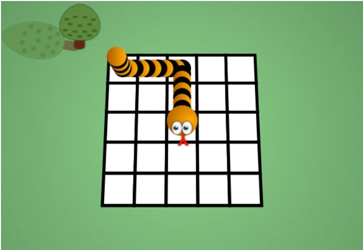
As you can see in that image (catured on Safari), my old way to do emoji tree shadows (color:transparent + black text-shadow) doesn't work well with the Twemoji webfont. Instead, Safari continues to show the emoji's colors.
So I searched a different, cross-browser way to shade these emoji, and I finally found it a few days later, using Browserstack 's remote iPhone & devtools:
.emoji.shadow { filter: contrast(0)brightness(0); opacity: .6 }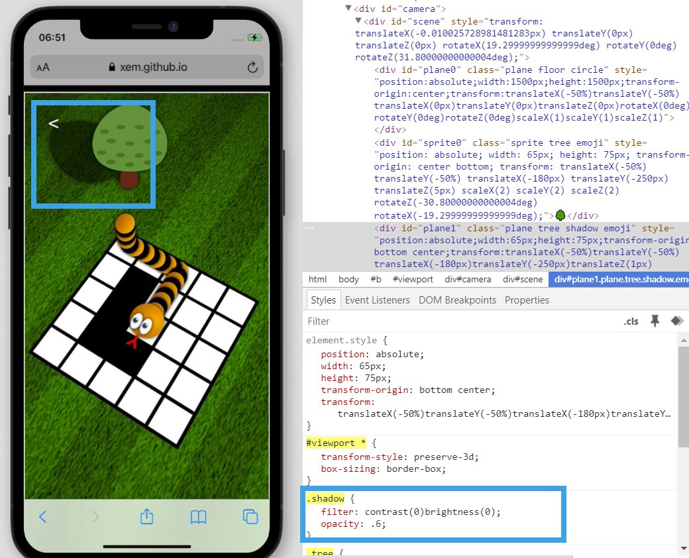
Total : 3h30, 4.45kb. Watch timelapse
Day 4: new grounds
On day 4 I had the huge chance to find finnhvman 's micro SVG patterns on Codepen, and I decided to not only use them in my game, but also contact him to help me make more!
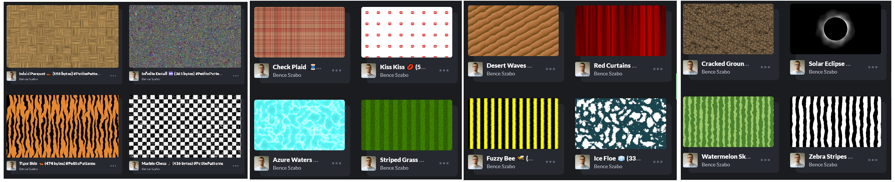
The banded grass looks gorgeous, compared to a simple green radial-gradient:
In my CSS, I applied a transparent-to-black radial background on top of the SVG background to make the ground look less flat, and more like a sphere (but in reality, it's just a rounded div).
Besides that, implementing the camera rotation with the mouse / finger required very little JS code:
See code
pointerdown = 0;
// Pointer down (mouse or finger)
onmousedown = ontouchstart = e => {
// Tactile devices: consider the first finger only
if(e.touches) e = e.touches[0];
// Set pointer down flag
pointerdown = 1;
// Save pointer position
px = e.pageX;
py = e.pageY;
}
// Pointer up
ontouchend = onmouseup = e => {
// Clear pointer down flag
pointerdown = 0;
}
// Pointer move
onmousemove = ontouchmove = e => {
var dx, dy;
// Tactile device: consider the first finger only
if(e.touches) e = e.touches[0];
// Find cursor delta X/Y since pointer down or last pointer move
dx = px - e.pageX;
dy = py - e.pageY;
// Rotate around X axis according to delta Y
rx += dy / 10;
// Rotate around Z axis according to delta X
rz += dx / 10;
// Re-set last pointer position using the current ones
px = e.pageX;
py = e.pageY;
// Rotate camera using CSS3DFramework
C.camera({rx,rz});
}
// Disable right click / long touch
oncontextmenu = () => { return false; }
Total : 6h45, 5.5kb. Watch timelapse
Days 5/6: didn't lift a finger
My next goal was to make the snake controllable using the mouse or the finger, by dragging its head on the stage.
Working on this feature took almost two days, because desktops and mobiles had a very weird support for what I was looking for:
e.layerX/layerY on Firefox and e.offsetX/offsetY on Webkit. Though, touch events don't support this feature at all.
So I went with another idea that I had found while I was working on LOSSST HD: put 4 almost transparent divs around the snake's head, and make it move as soon as one of these divs is touched with the pointer, using document.elementFromPoint(e.clientX,e.clientY)
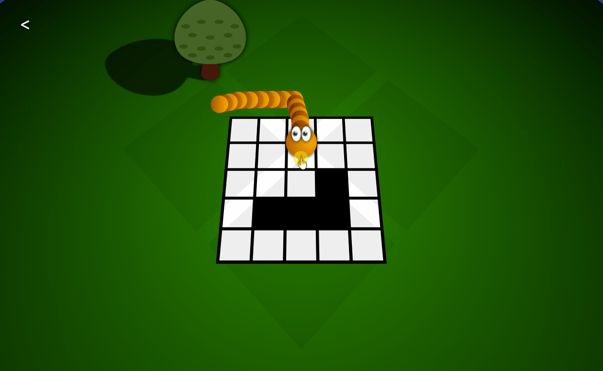
Unfortunately, this way to control the snake wasn't precise enough on little screens, and even confusing for wall puzzles and 3D puzzles, so a few days later I scraped it entirely to save a few dozens of bytes.
Like every year, the end of the first week is also the occasion to clean up my code and split my project into multiple files... (getting used to this hierarchy always takes a few days, but it's better than a single, 200kb index.html file, I guess.)
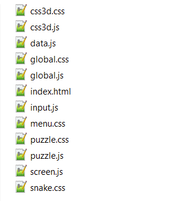
I also made a comparison of my scene with and without CSS radial gradients and shadows. Quite impressive:
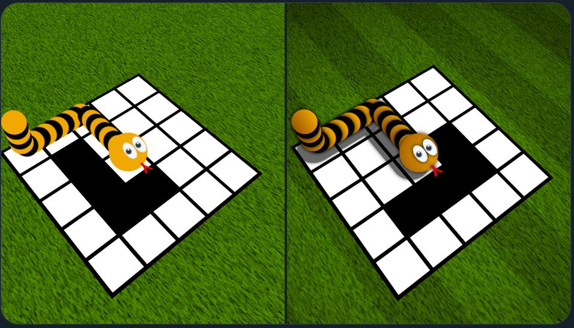
(The final game has much less shadows than the right image, I tried to use as few shadows as possible to not overwhelm people with them)
Total : 14h, 20kb. Watch day 5 timelapse / Watch day 6 timelapse
Day 7: move your body
I took the time to test different ways to move the snake's body, and asked people which one they prefer .
My favourite approach (#3) was also chosen by the other devs ... even if it looks less natural than the others.
So I went with it!
Besides that, I implemented collisions (the snake can't move over itself) and backtracking (when pulling the head to the position from which it's coming)...
... and wrote the code responsible to check if the puzzles are solved.
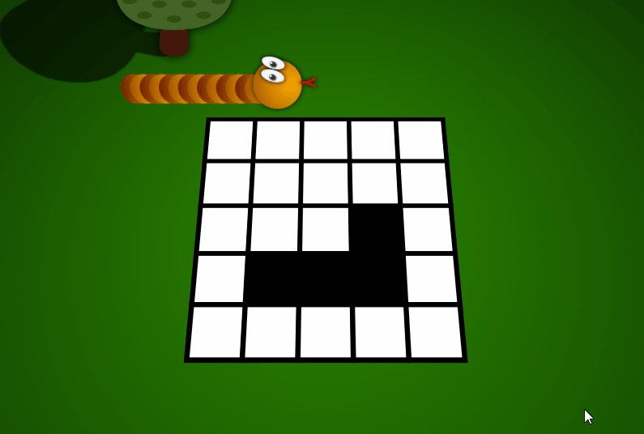
Note from september 13: my snake.js file has become the heaviest of all the project (25kb commented, 2.3kb minified/zipped), because it had to handle head movements and rotations, body movements, collisions, smart backtracking, plus all the puzzle mechanics (walls, wraps, teleporters, gravity) and a ton of edge cases. Phew.
Total : 17h30, 26kb, 4kb zipped. Watch timelapse
Days 8/9: puzzled
I developed new puzzle types: the ones with a wall, the ones with floor + wall...
And the ones with wrapping:
This was the moment when I added keyboard controls and realized I'll have to scrap the "drag head to move" mechanic, which will become too complex to maintain and keep intuitive for the player.
Though, despite the hours spent, I still felt that I had absolutely no game yet, only an engine, so I made this meme to represent my impression:
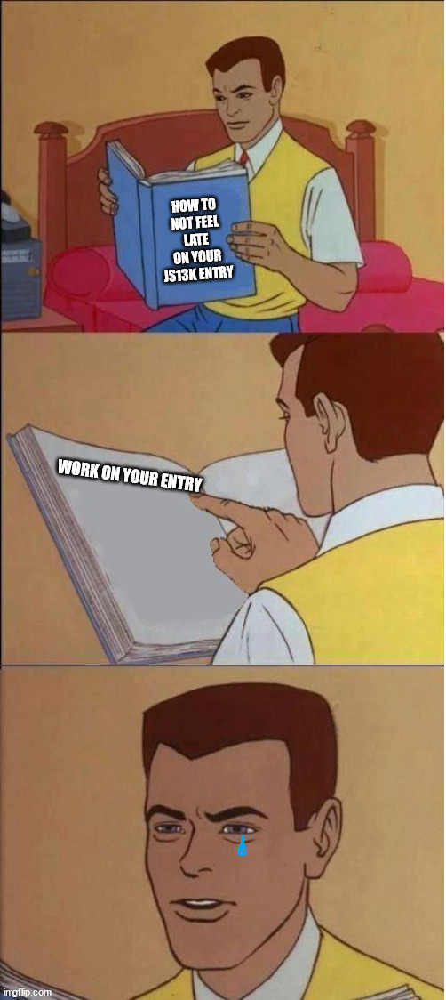
At the end, I started looking for a way to produce music... (super early compared to the other years!)
I started by trying to reproduce classic melodies from their piano partitions, but it ended up being a dead-end. Partitions are an unbelievable mess of complexity , I don't have the time (or the patience) to figure them out and develop a game at the same time!
Total : 27h15, 39kb. Watch day 8 timelapse / Watch day 9 timelapse
Day 10: music!
I woke up with a strong determination to produce music for my game... but how?
AndreJaenisch pointed me to midi-js , which helped me find an older, unmaintained project (jasmid ) that does exactly what I want: list all the notes from all the tracks of a MIDI file.
So I took jasmid with me and spent a few hours creating my new tool: midi2array !
micro piano synth I wrote in 2019.
Also, it's sunday, so let's conclude this second week with a little compression test:
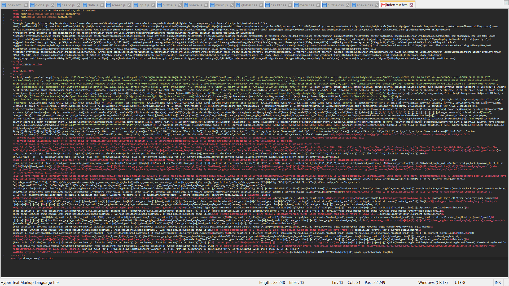
Total : 30h30, 41.6kb commented, 5.85kb zipped. Watch timelapse
Day 11: scenery
It becomes urgent to start making puzzles for my... puzzle game.
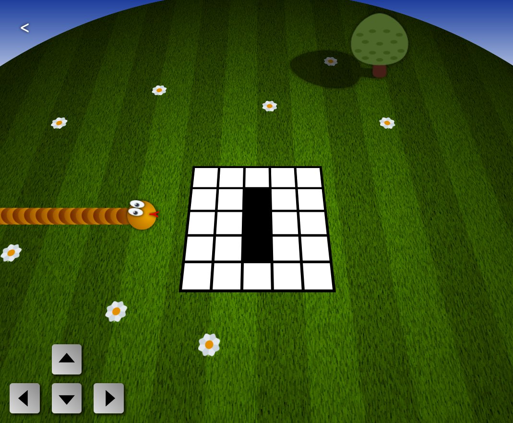
And brick blocks, which will have a real importance inside the puzzles, because the snake will collide with them.
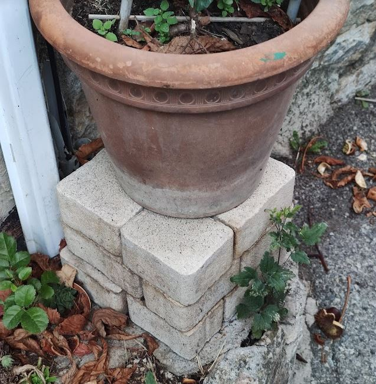
But it wasn't as good as I hoped. Why is there a hole on top?!
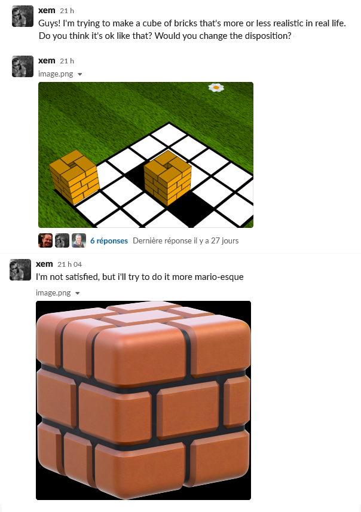
To optimize things, I ended up designing 2 micro-textures in SVG ( A: A + B + A , and the left and right faces with B + A + B .
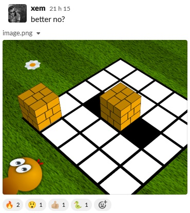
And everyone liked that!
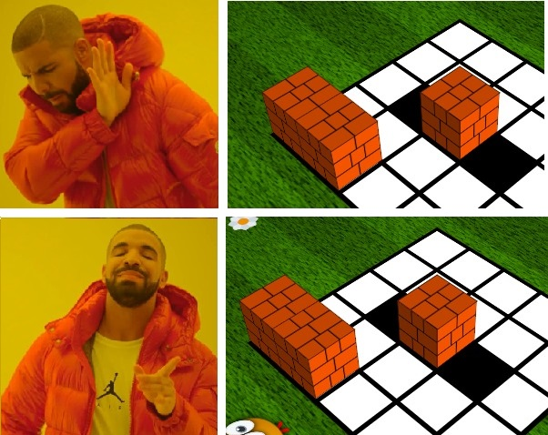
But after alternating the top/front textures and the sides textures according to the Y coordinate of the cube, it's cool!
In bonus, since these textures are simple SVG rectangles with a black "stroke", they can be filled with any color we want in CSS.
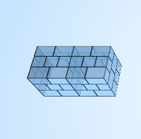
Also, every time I make a CSS3D game, a fancy "undefined" pops up in my scene at one moment or another. This year, it was here:
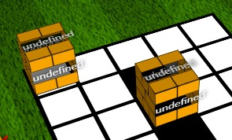
Total : 33h15, 43kb. Watch timelapse
Day 12: animals and music
I wanted to display random animals in my scene, but... I forgot to call Math.random() and they all came together!
Besides that, I spent some time playing with midi2Array, and created the first two melodies of the game (Morning Mood and Dance of the mirlitons ).
a list of my favourite classical musics , so I just have to pick in that list to choose the soundtrack of my js13k entry.
Total : 37h, 46.7kb. Watch timelapse
Day 13: what's on the menu?
I got tired of the menu I made on day 2, so I remade it entirely, by imitating the style of LOSSST 2017:
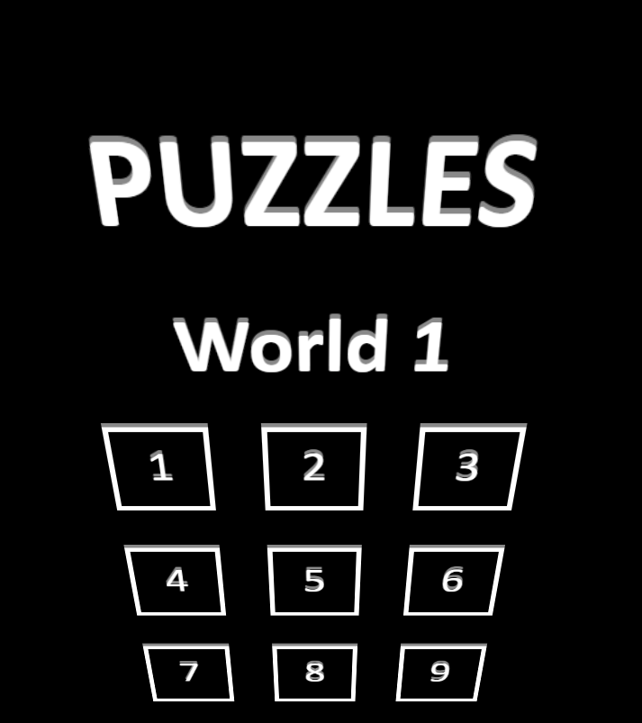
I also added a 3rd song (Alla Turca ), debugged mobile controls, and finally implemented my first puzzle (woohoo!)
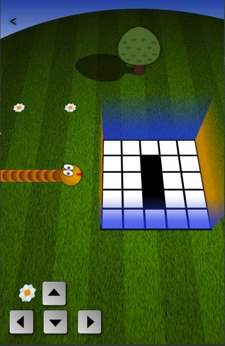
(Though the "final" first puzzle will be rotated 90° and won't have the wrap walls around it, today they were present for debug purposes.)
Total : 39h30, 50.2kb. Watch timelapse
Day 14: a bit of everything
I spent this day on plenty of little details:
Eine Kleine Nachtmusik ),
... and started the intro animation, because a good game needs to start with a "wow effect".
A friend asked me how I managed to do animations like that, and the answer is: by hand.
And to give the impression that I move the camera, the trick is to move the whole scene.
C.move() and C.camera() methods.
Finally, all the timings are fine-tuned manually using setTimeout 's. The final game has 2 cutscenes and 64 setTimeouts.
Here's what the beginning of this intro looks like in my source code
// Move right 7 times
for(i = 0; i < 7; i++){
setTimeout(()=>{r=1;move_snake();r=0;}, 300 + i * 250);
}
// Look up
setTimeout(()=>C.move({n:"head_tilt", z:28,ry:-45}), 3000);
setTimeout(()=>C.camera({rx:120, z:-100,y:-300}),3500);
// Look down
setTimeout(()=>{
C.c({x:-200,y:50,z:-200,rx:50,rz:30});
C.plane({w:100,h:100,x:397,y:145,z:72,H:svg[1],rx:-90,ry:-22,sx:4,sy:4.5,sz:4});
}, 10200);
// Tilt head down
setTimeout(()=>{C.move({n:"head_tilt",ry:0})}, 14000);
// Move right twice
setTimeout(()=>{r=1;move_snake();r=0}, 15500);
setTimeout(()=>{r=1;move_snake();r=0}, 15700);
// Show rocket
setTimeout(()=>{C.camera({x:450,y:-70,z:-100,rx:60,rz:-20})}, 18500);
// Show sign
setTimeout(()=>{C.camera({x:370,y:0,z:-400,rx:60,rz:-40})}, 23500);
(...)
Total : 44h30, 53.1kb. Watch timelapse
Day 15: puzzles for realsies
After completing (more or less) my intro cutscene...
... and writing a few new tips and tricks on Twitter...
... I finally, really, started creating my puzzles, 100% by hand.
I made 26 puzzles for the world 1, and immediately requested beta-testers to check if everything was going in the right direction.
A cute detail that appeared randomly: when the snake walks behind a tree, its eyes stand out in front of the tree, and I kept it like that, it makes a nice cartoony effect.
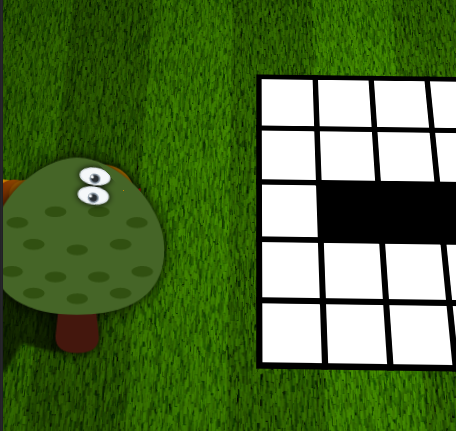
Total : 49h, 65.1kb. Watch timelapse
Days 16/17/18/19: how many puzzles is too many puzzles?
The puzzle factory now runs pretty well, I take the best puzzles from LOSSST 2017 and LOSSST HD and add many new ones that I invent on my notepad or using my old generator .
On day 16, I reached a total of 60 puzzles for the World 1. All coded manually.
Frank Force suggested that I stick to 30-40. I decided to do 50.
On day 17, I added my "developer records" for all the puzzles. They will add an extra challenge for the best players.
Teleporters are much harder to implement than the wrap.
Once the head has been teleported, it must be able to move in the four directions around it, which was not the case until now (one of the directions was reserved for backtracking).
And finally, when the snake has moved past a teleporter, and then decides to backtrack back to it, then the head can't really go back through the teleporter, because the result would be very confusing (the body would need to go back 3 times in total, to leave the head on a tile that doesn't contain a teleporter).
I spent many hours implementing them on day 17, but continued enhancing and fixing them until the last week of the compo, as a lot of edge cases occurred with the new puzzles. (my testers have been very good at finding them)
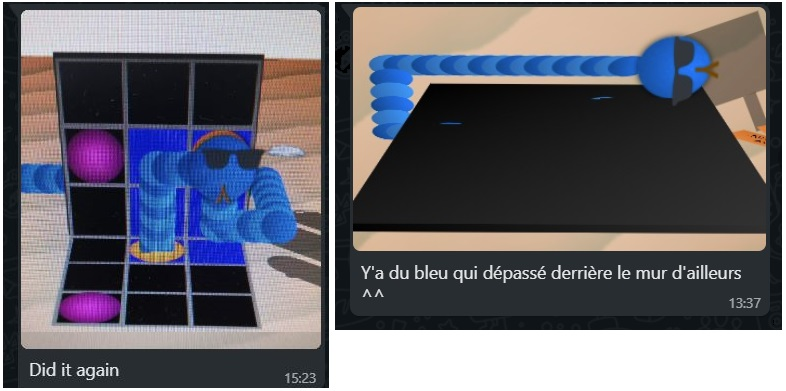
I also added a 5th song: La Primavera .
It's already the end of the 3rd week, so a little compression test allowed me to see that my zip was 10.5kb... or 9.5kb after using RoadRoller. This tool is crazy! 🤯
On day 18, a weird feeling appeared. I was in holidays, but it was monday, and working on my game felo like "real work", not a hobby. Ew.
went to the pool and when I got back, I started working on a puzzle editor!
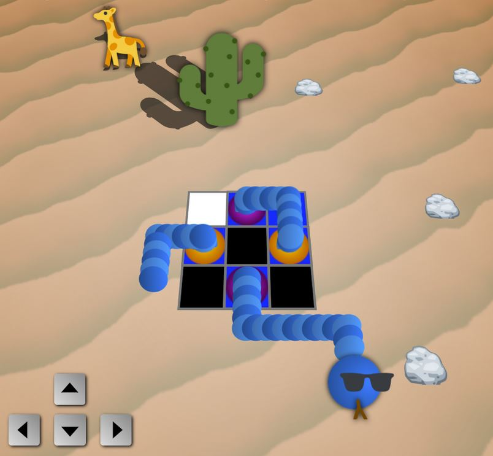
Thanks to the beta-testers feedbacks, I could also tweak and reorganize many puzzles from World 1, to make their difficulty curve a bit better.
On day 19, I found back my best tool to invent more puzzles for World 2. And this tool is... a notepad.
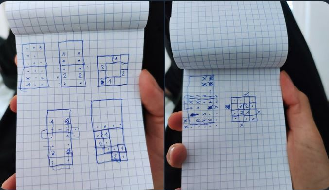
I was happy to finally have "really hard" puzzles in world 2...
Oh, and did you notice that the snake has different styles and eyes on each world? (sunglasses in world 2, ski glasses in world 3).
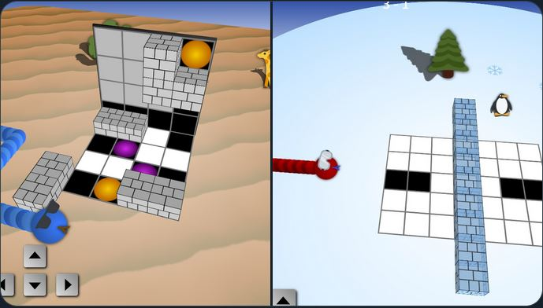
Total : 68h45, 104kb. Day 16 timelapse / Day 17 timelapse / Day 18 timelapse / Day 19 timelapse
Days 20/21: [edited]
Total : ...h, ...kb. Watch timelapse
TO BE CONTINUED
{kind=link}
{kind=link}

{kind=link}